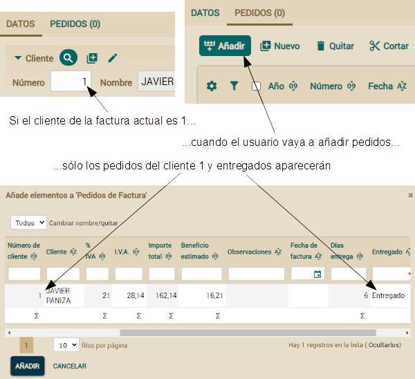

public class Pedido extends DocumentoComercial {
@ManyToOne
@ReferenceView("SinClienteNiPedidos")
@OnChange(MostrarOcultarCrearFactura.class)
@OnChangeSearch(BuscarAlCambiarFactura.class) // Añade esta anotación
@SearchAction("Pedido.buscarFactura")
Factura factura;
...
}
package com.tuempresa.facturacion.acciones; // En el paquete 'acciones'
import java.util.*;
import org.openxava.actions.*; // Para usar OnChangeSearchAction
import org.openxava.model.*;
import org.openxava.view.*;
import com.tuempresa.facturacion.modelo.*;
public class BuscarAlCambiarFactura
extends OnChangeSearchAction { // Lógica estándar para buscar una referencia cuando
// los valores clave cambian en la interfaz de usuario (1)
public void execute() throws Exception {
super.execute(); // Ejecuta la lógica estándar (2)
Map clave = getView() // getView() aquí es la de la referencia, no la principal(3)
.getKeyValuesWithValue();
if (clave.isEmpty()) return; // Si la clave está vacía no se ejecuta más lógica
Factura factura = (Factura) // Buscamos la factura usando la clave tecleada (4)
MapFacade.findEntity(getView().getModelName(), clave);
View vistaCliente = getView().getRoot().getSubview("cliente"); // (5)
int numeroCliente = vistaCliente.getValueInt("numero");
if (numeroCliente == 0) { // Si no hay cliente lo llenamos (6)
vistaCliente.setValue("numero", factura.getCliente().getNumero());
vistaCliente.refresh();
}
else { // Si ya hay un cliente verificamos que coincida con el cliente de la factura (7)
if (numeroCliente != factura.getCliente().getNumero()) {
addError("cliente_factura_no_coincide",
factura.getCliente().getNumero(), factura, numeroCliente);
getView().clear();
}
}
}
}
Para implementar el comportamiento visualizado en la imagen anterior, la acción pregunta si no hay cliente (numeroCliente == 0) (6). Si éste es el caso rellena los datos del cliente desde el cliente de la factura. En caso contrario implementa la lógica de la imagen de arriba verificando que el cliente del pedido actual coincide con el cliente de la factura recuperada.
Nos queda un pequeño detalle, el texto del mensaje. Añade la siguiente entrada al archivo MensajesFacturacion_es.properties de la carpeta i18n:
cliente_factura_no_coincide=Cliente Nº {0} de la factura {1} no coincide con el cliente Nº {2} del pedido actual
Refinar el comportamiento de las colecciones
Podemos refinar las colecciones de la misma forma que hemos hecho con las referencias. Esto es muy útil, porque nos permite mejorar el comportamiento actual del módulo Factura. El usuario sólo puede añadir un pedido a una factura si la factura y el pedido pertenecen al mismo cliente. Además, el pedido tiene que estar entregado y no tener todavía factura.Refinar la lista para añadir elementos a la colección
Actualmente cuando el usuario trata de añadir pedidos a la factura todos los pedidos están disponibles. Vamos a mejorar esto para mostrar solo los pedidos del cliente de la factura, entregados y todavía sin factura, tal como se muestra:
Usaremos la anotación @AddAction para definir nuestra propia acción que muestre la lista para añadir pedidos. El siguiente código muestra la modificación necesaria en la clase Factura:
public class Factura extends DocumentoComercial {
@OneToMany(mappedBy="factura")
@CollectionView("SinClienteNiFactura")
@AddAction("Factura.anyadirPedidos") // Define nuestra propia acción para añadir pedidos
Collection<Pedido> pedidos;
...
}
Ahora hemos de editar controladores.xml para añadir el controlador Factura (todavía no existe) con nuestra acción:
<controlador nombre="Factura">
<hereda-de controlador="Facturacion"/>
<accion nombre="anyadirPedidos"
clase="com.tuempresa.facturacion.acciones.IrAnyadirPedidosAFactura"
oculta="true" icono="table-row-plus-after"/>
<!--
oculta="true" : No se mostrará en la barra de botones del módulo
icono="table-row-plus-after" : La misma imagen que la acción estándar
-->
</controlador>
package com.tuempresa.facturacion.acciones; // En el paquete 'acciones'
import org.openxava.actions.*; // Para usar GoAddElementsToCollectionAction
public class IrAnyadirPedidosAFactura
extends GoAddElementsToCollectionAction { // Lógica estándar para ir a la lista que
// permite añadir elementos a la colección
public void execute() throws Exception {
super.execute(); // Ejecuta la lógica estándar, la cual muestra un diálogo
int numeroCliente =
getPreviousView() // getPreviousView() es la vista principal (estamos en un diálogo)
.getValueInt("cliente.numero"); // Lee el número de cliente de la
// factura actual de la vista
getTab().setBaseCondition( // La condición de la lista de pedidos a añadir
"${cliente.numero} = " + numeroCliente +
" and ${entregado} = true and ${factura} is null"
);
}
}
Refinar la acción que añade elementos a la colección
Una mejora interesante para la colección de pedidos sería que cuando el usuario añada pedidos a la factura actual, las líneas de detalle de estos pedidos se copien automáticamente a la factura.No podemos usar @AddAction para esto, porque es la acción que muestra la lista de elementos a añadir a la colección. Pero no es la acción que añade los elementos. En esta sección aprenderemos como definir la acción que realmente añade los elementos:

Por desgracia, no hay una anotación para definir directamente esta acción de añadir. Sin embargo, no es una tarea demasiado difícil, solo hemos de refinar la acción @AddAction instruyéndola para mostrar nuestro propio controlador y en este controlador podemos poner las acciones que queramos. Dado que ya hemos definido nuestra @AddAction en la sección anterior solo hemos de añadir un nuevo método a la ya existente IrAnyadirPedidosAFactura. Añade el siguiente método getNextController() a tu acción:
public class IrAnyadirPedidosAFactura ... {
...
public String getNextController() { // Añadimos este método
return "AnyadirPedidosAFactura"; // El controlador con las acciones disponibles
} // en la lista de pedidos a añadir
}
<controlador nombre="AnyadirPedidosAFactura">
<hereda-de controlador="AddToCollection" /> <!-- Extiende del controlador estándar -->
<!-- Sobrescribe la acción para añadir -->
<accion nombre="add"
clase="com.tuempresa.facturacion.acciones.AnyadirPedidosAFactura" />
</controlador>
package com.tuempresa.facturacion.acciones; // En el paquete 'acciones'
import java.rmi.*;
import java.util.*;
import javax.ejb.*;
import org.openxava.actions.*; // Para usar AddElementsToCollectionAction
import org.openxava.model.*;
import org.openxava.util.*;
import org.openxava.validators.*;
import com.tuempresa.facturacion.modelo.*;
public class AnyadirPedidosAFactura
extends AddElementsToCollectionAction { // Lógica estándar para añadir
// elementos a la colección
public void execute() throws Exception {
super.execute(); // Usamos la lógica estándar "tal cual"
getView().refresh(); // Para visualizar datos frescos, incluyendo los importes
} // recalculados, que dependen de las líneas de detalle
protected void associateEntity(Map clave) // El método llamado para asociar
throws ValidationException, // cada entidad a la principal, en este caso para
XavaException, ObjectNotFoundException,// asociar cada pedido a la factura
FinderException, RemoteException
{
super.associateEntity(clave); // Ejecuta la lógica estándar (1)
Pedido pedido = (Pedido) MapFacade.findEntity("Pedido", clave); // (2)
pedido.copiarDetallesAFactura(); // Delega el trabajo principal en la entidad (3)
}
}